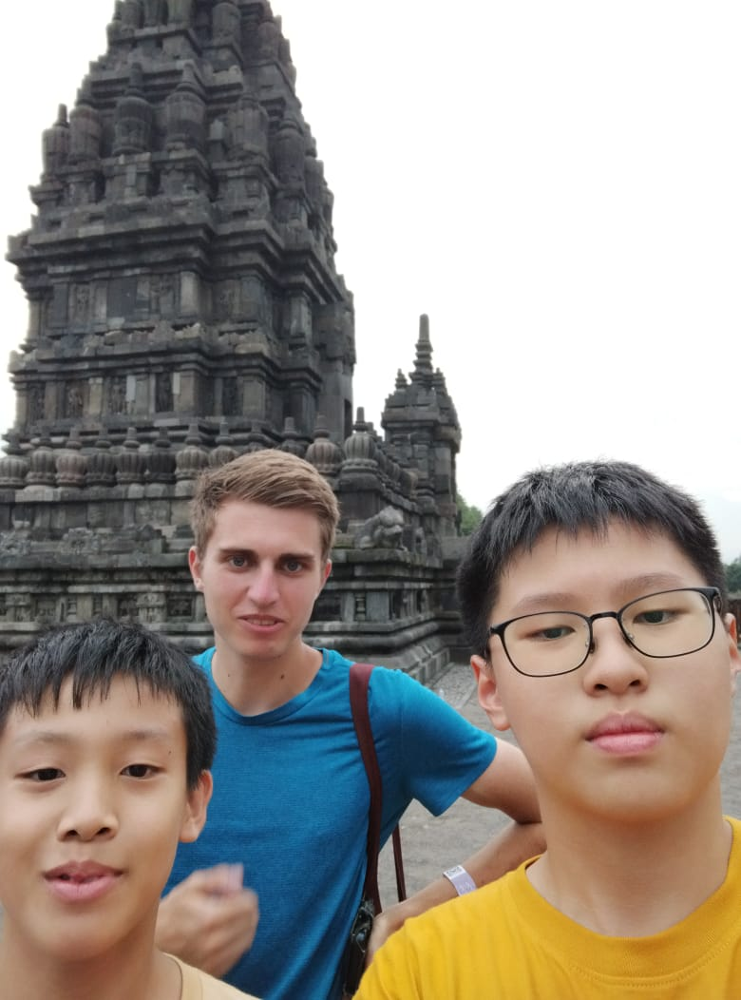

Ini adalah halaman IPS
Dalam IPS, kita belajar tentang sejarah dan ekonomi.


Membajak sawah
Salah satu aktivitas kita melakukan saat live in adalah membajak sawah. Tujuan untuk membajak sawah adalah untuk mengemburkan tanah, meningkatkan aerosi tanah, mengaduk bahan original, dan membuat saluran air.
Hasil Wawancara Wisatawan
1. Wisatawan domestik: "Fasilitas tentu bagus, tempat sangat berseni, cukup bersih, tempat sangat indah."
2. Wisatawan asing: "The place is very beautiful, very clean especially on the outside. Facilities like the toilets are okay, the price is a little bit expensive but it's alright, and the place is very safe."
Hasil Wawancara Fasilitator Museum Sangiran
Manusia berburu agar dapat mengadaptasi kepada butuhan masanya. Pernyebab pergantian cara hidupnya adalah karena penggantian iklim, penggantian lingkungan, dan perubah cara piikiran.
Hasil Wawancara Orang tua Asuh Live in
Saat live in saya tinggal bersama ibu bernama Sri Suwarni. Dia jual gorengan, tempat tinggalnyha adalah warisan dari suami, dia adalah anggota masyarakat. Tradisi pada keluarganya adalah kenduri, tradisi masyarakat adalah bulan suro dan kenduri.Pengelolaan keuangan adalah untuk makan dan kuliah anaknya. Pengelolaan lingkungan adalah untuk kebersihan dan gotong royong.